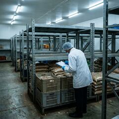

PMC · Civic
PMC takes no action on firecracker violations despite Diwali ban in public spaces
The Pune Municipal Corporation (PMC), which banned firecrackers in public spaces for Diwali, has taken no action against violations this year.


Saturday, 14 November 2026 · Pune
Saturday, 14 November 2026 · Pune
Older stories, page 4 of 4.
Tuesday, 10 November
PMC · Civic
The Pune Municipal Corporation (PMC), which banned firecrackers in public spaces for Diwali, has taken no action against violations this year.
Khadakwasla dams · Civic
Around 21.5 TMC of water will remain in the four dams to meet the requirements of Pune city and rural areas over the next nine months, once the Khadakwasla circle dams stop releasing water for rural areas by this weekend.
The existing stock is around 5.5 TMC lower than the storage recorded in the dams around mid-November last year.
Authorities are to take a call on Pune's water supply.

Maharashtra FDA · Business
Following inspections on November 4 and 5, the Maharashtra Food and Drug Administration (FDA) has suspended the licences of 105 food businesses, and ordered seven establishments across Maharashtra to shut operations after detecting food safety violations.

Sunday, 8 November
NCP merger talk · Politics
On Sunday, a second day running, Parth Pawar visited Sharad Pawar at Silver Oak, fuelling talk of an NCP merger.
Wednesday, 4 November
Pune police · Crime
A Pune city police constable allegedly rammed his car into the main gate of Police Commissioner Amitesh Kumar’s official residence on Tuesday evening, 3 November, in an attempt to force his way in, the city police said.
Katraj Valley · Crime
Infratech owner Kisan Dhavji Rathod and 12 others have been booked by Bharati Vidyapeeth police in a cheating case over flats and open plots offered at low prices in a ‘Katraj Valley’ housing project; police say 51 people allegedly lost ₹89,07,000.